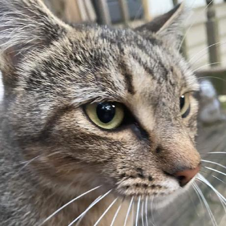

Add Kakarot Extensions to Mana
Opening Mana…
Open in Mana
Still nothing? Update Mana to the latest version, or add this repository URL by hand:
https://karrot0.github.io/kakarot-extensions-mana/main
View all extensions